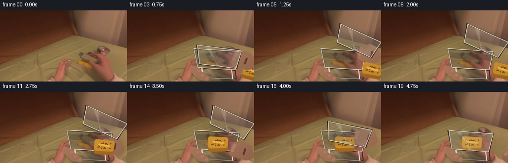
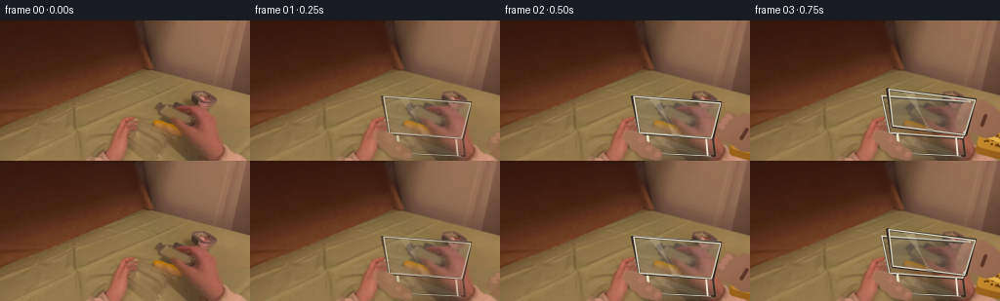
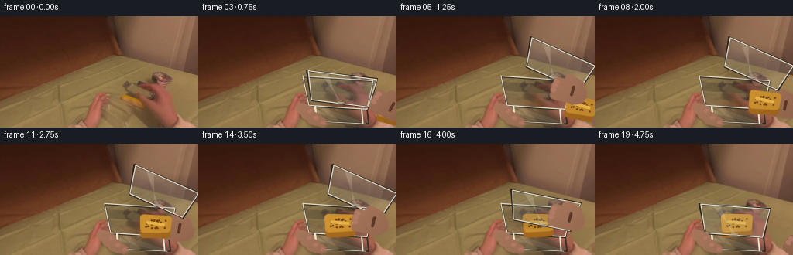
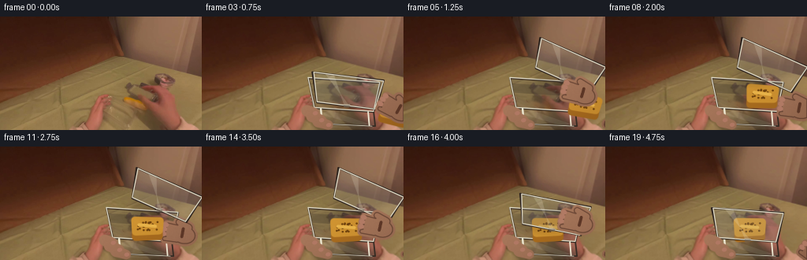
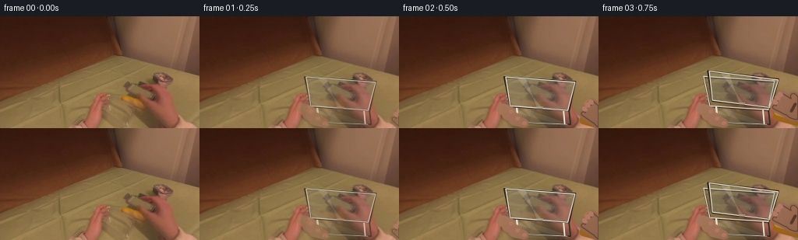
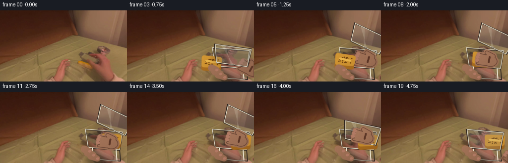
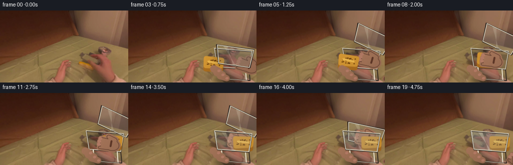
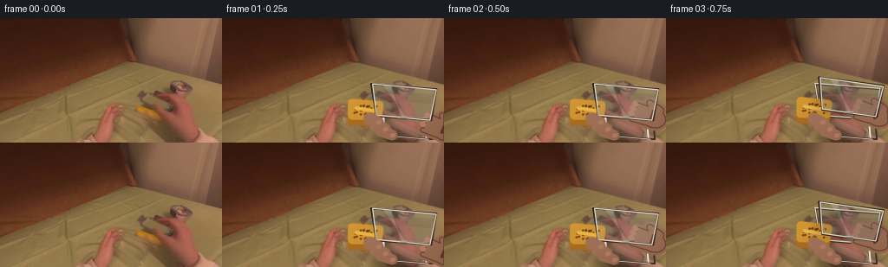

CODING AGENTS AS PIXEL WORLD MODELS
traex/DeepSeek-V4.1-Flash · common50_0013
点击播放 · 原生 RGB 像素
逐轮保存的候选
回放视频、检查图与代码变化。
每份候选均可单独播放。实际图片检查记录在下方工具轨迹中。
候选 01播放与检查图
点击播放 · 原生 RGB 像素


展开代码变化
--- 上一保存版本
+++ 本次保存版本
@@ -0,0 +1,558 @@
+"""Generate the requested first-person tupperware animation from first_frame.png."""
+
+from pathlib import Path
+import math
+
+import cv2
+import numpy as np
+from PIL import Image
+
+import artifact_io
+
+
+CASE_DIR = Path(__file__).resolve().parent
+WIDTH = 256
+HEIGHT = 144
+FRAMES = 20
+FPS = 4
+SUPERSAMPLE = 4
+SCALE = SUPERSAMPLE
+RNG = np.random.default_rng(17)
+
+
+def clamp01(value):
+ return max(0.0, min(1.0, float(value)))
+
+
+def smoothstep(value):
+ value = clamp01(value)
+ return value * value * (3.0 - 2.0 * value)
+
+
+def lerp(a, b, t):
+ return a + (b - a) * t
+
+
+def spt(point):
+ return (int(round(point[0] * SCALE)), int(round(point[1] * SCALE)))
+
+
+def spoly(points):
+ return np.asarray([spt(point) for point in points], dtype=np.int32)
+
+
+def put_alpha_polygon(canvas, points, color, alpha):
+ overlay = canvas.copy()
+ cv2.fillPoly(overlay, [spoly(points)], color, cv2.LINE_AA)
+ cv2.addWeighted(overlay, alpha, canvas, 1.0 - alpha, 0.0, dst=canvas)
+
+
+def put_alpha_ellipse(canvas, center, axes, angle, color, alpha):
+ overlay = canvas.copy()
+ cv2.ellipse(
+ overlay,
+ spt(center),
+ (max(1, int(axes[0] * SCALE)), max(1, int(axes[1] * SCALE))),
+ angle,
+ 0,
+ 360,
+ color,
+ -1,
+ cv2.LINE_AA,
+ )
+ cv2.addWeighted(overlay, alpha, canvas, 1.0 - alpha, 0.0, dst=canvas)
+
+
+def rotated_points(points, center, angle_degrees):
+ theta = math.radians(angle_degrees)
+ c, s = math.cos(theta), math.sin(theta)
+ out = []
+ for x, y in points:
+ dx, dy = x - center[0], y - center[1]
+ out.append((center[0] + c * dx - s * dy, center[1] + s * dx + c * dy))
+ return out
+
+
+def make_texture_mask(mask, base, shadow, highlight, seed):
+ """Turn a hard mask into a softly lit, lightly grained material."""
+ local_rng = np.random.default_rng(seed)
+ h, w = mask.shape
+ yy, xx = np.mgrid[0:h, 0:w]
+ light = np.clip(1.08 - 0.34 * (xx / max(1, w - 1)) - 0.24 * (yy / max(1, h - 1)), 0.0, 1.2)
+ grain = cv2.GaussianBlur(local_rng.normal(0.0, 0.035, (h, w)).astype(np.float32), (0, 0), 1.8)
+ grain = np.clip(grain, -0.12, 0.12)
+ t = np.clip(light + grain, 0.0, 1.2)[..., None]
+ low = np.asarray(shadow, dtype=np.float32)
+ high = np.asarray(highlight, dtype=np.float32)
+ color = low[None, None, :] + (high - low)[None, None, :] * t
+ return np.clip(color, 0, 255).astype(np.uint8)
+
+
+def composite_masked(canvas, mask, colors, feather=1.5):
+ if feather > 0:
+ alpha = cv2.GaussianBlur(mask.astype(np.float32), (0, 0), feather * SCALE)
+ alpha = np.clip(alpha, 0.0, 1.0)[..., None]
+ else:
+ alpha = (mask > 0).astype(np.float32)[..., None]
+ canvas[:] = np.clip(canvas.astype(np.float32) * (1.0 - alpha) + colors.astype(np.float32) * alpha, 0, 255).astype(np.uint8)
+
+
+def draw_soft_shadow(canvas, center, axes, angle, alpha=0.24):
+ h, w = canvas.shape[:2]
+ shadow = np.zeros((h, w), dtype=np.float32)
+ cv2.ellipse(
+ shadow,
+ spt(center),
+ (max(1, int(axes[0] * SCALE)), max(1, int(axes[1] * SCALE))),
+ angle,
+ 0,
+ 360,
+ 1.0,
+ -1,
+ cv2.LINE_AA,
+ )
+ shadow = cv2.GaussianBlur(shadow, (0, 0), 3.4 * SCALE)
+ shadow = (shadow * alpha)[..., None]
+ tint = np.asarray([31, 21, 16], dtype=np.float32)[None, None, :]
+ canvas[:] = np.clip(canvas.astype(np.float32) * (1.0 - shadow) + tint * shadow, 0, 255).astype(np.uint8)
+
+
+def capsule_mask(mask, p0, p1, radius, taper=0.70):
+ p0s, p1s = spt(p0), spt(p1)
+ r0 = max(1, int(radius * SCALE))
+ r1 = max(1, int(radius * taper * SCALE))
+ length = max(1, int(math.hypot(p1s[0] - p0s[0], p1s[1] - p0s[1])))
+ polygon = []
+ for i in range(length + 1):
+ t = i / length
+ x = lerp(p0s[0], p1s[0], t)
+ y = lerp(p0s[1], p1s[1], t)
+ r = lerp(r0, r1, t)
+ angle = math.atan2(p1s[1] - p0s[1], p1s[0] - p0s[0]) + math.pi / 2.0
+ polygon.append((x + r * math.cos(angle), y + r * math.sin(angle)))
+ for i in range(length, -1, -1):
+ t = i / length
+ x = lerp(p0s[0], p1s[0], t)
+ y = lerp(p0s[1], p1s[1], t)
+ r = lerp(r0, r1, t)
+ angle = math.atan2(p1s[1] - p0s[1], p1s[0] - p0s[0]) - math.pi / 2.0
+ polygon.append((x + r * math.cos(angle), y + r * math.sin(angle)))
+ cv2.fillPoly(mask, [np.asarray(polygon, dtype=np.int32)], 255, cv2.LINE_AA)
+ cv2.circle(mask, p0s, r0, 255, -1, cv2.LINE_AA)
+ cv2.circle(mask, p1s, r1, 255, -1, cv2.LINE_AA)
+
+
+def draw_hand(canvas, palm, angle, scale=1.0, seed=3, draw_nails=True):
+ """Draw a warm-lit right hand entering from the lower-right edge."""
+ h, w = canvas.shape[:2]
+ mask = np.zeros((h, w), dtype=np.uint8)
+ detail = np.zeros((h, w), dtype=np.uint8)
+ px, py = palm
+ direction = np.asarray([math.cos(angle), math.sin(angle)], dtype=np.float32)
+ normal = np.asarray([-direction[1], direction[0]], dtype=np.float32)
+
+ wrist = (px - direction[0] * 25.0 * scale, py - direction[1] * 25.0 * scale)
+ wrist = (max(wrist[0], 258.0), max(wrist[1], 126.0))
+ arm_end = (w / SCALE + 20.0, h / SCALE + 12.0)
+
+ # Forearm, palm, and four tapered fingers.
+ arm_poly = [
+ (wrist[0] - normal[0] * 12.0 * scale, wrist[1] - normal[1] * 12.0 * scale),
+ (wrist[0] + normal[0] * 14.0 * scale, wrist[1] + normal[1] * 14.0 * scale),
+ (arm_end[0] + normal[0] * 18.0, arm_end[1] + normal[1] * 18.0),
+ (arm_end[0] - normal[0] * 17.0, arm_end[1] - normal[1] * 17.0),
+ ]
+ cv2.fillPoly(mask, [spoly(arm_poly)], 255, cv2.LINE_AA)
+ palm_center = spt((px, py))
+ cv2.ellipse(
+ mask,
+ palm_center,
+ (int(15.0 * scale * SCALE), int(11.5 * scale * SCALE)),
+ math.degrees(angle),
+ 0,
+ 360,
+ 255,
+ -1,
+ cv2.LINE_AA,
+ )
+
+ finger_base = (px + direction[0] * 8.0 * scale, py + direction[1] * 8.0 * scale)
+ for index, offset in enumerate((-8.0, -2.8, 2.6, 7.7)):
+ lateral = normal * offset * scale
+ start = (finger_base[0] + lateral[0], finger_base[1] + lateral[1])
+ bend = 2.0 + abs(offset) * 0.18
+ tip = (
+ start[0] + direction[0] * (20.0 - bend) * scale + normal[0] * offset * 0.20 * scale,
+ start[1] + direction[1] * (20.0 - bend) * scale + normal[1] * offset * 0.20 * scale,
+ )
+ capsule_mask(mask, start, tip, (4.0 - abs(offset) * 0.08) * scale, 0.72)
+ if draw_nails and index in (1, 2, 3):
+ nail_center = (
+ tip[0] + direction[0] * 1.5 * scale,
+ tip[1] + direction[1] * 1.5 * scale,
+ )
+ cv2.ellipse(
+ detail,
+ spt(nail_center),
+ (max(1, int(2.0 * scale * SCALE)), max(1, int(1.3 * scale * SCALE))),
+ math.degrees(angle),
+ 0,
+ 360,
+ 255,
+ -1,
+ cv2.LINE_AA,
+ )
+
+ thumb_start = (px - direction[0] * 4.0 + normal[0] * 10.0, py - direction[1] * 4.0 + normal[1] * 10.0)
+ thumb_tip = (thumb_start[0] + direction[0] * 13.0 + normal[0] * 5.0, thumb_start[1] + direction[1] * 13.0 + normal[1] * 5.0)
+ capsule_mask(mask, thumb_start, thumb_tip, 5.0 * scale, 0.75)
+
+ colors = make_texture_mask(
+ mask,
+ (146, 102, 72),
+ (83, 49, 33),
+ (205, 151, 118),
+ seed,
+ )
+ composite_masked(canvas, mask, colors, feather=1.2)
+
+ # A restrained nail sheen and two knuckle creases keep the hand readable.
+ detail_colors = np.zeros_like(canvas)
+ detail_colors[:] = (178, 123, 101)
+ composite_masked(canvas, detail, detail_colors, feather=0.7)
+ crease = np.zeros((h, w), dtype=np.uint8)
+ for side in (-3.0, 2.8):
+ c0 = (px + direction[0] * 2.0 + normal[0] * side, py + direction[1] * 2.0 + normal[1] * side)
+ c1 = (c0[0] + normal[0] * 5.0, c0[1] + normal[1] * 5.0)
+ cv2.line(crease, spt(c0), spt(c1), 255, max(1, int(0.75 * SCALE)), cv2.LINE_AA)
+ crease = cv2.GaussianBlur(crease, (0, 0), 0.45 * SCALE)
+ crease_colors = np.zeros_like(canvas)
+ crease_colors[:] = (93, 55, 39)
+ composite_masked(canvas, crease, crease_colors, feather=0.0)
+
+
+def draw_holding_fingers(canvas, offset=(0.0, 0.0)):
+ """Three fingertips curled over the near-left lip of the box."""
+ h, w = canvas.shape[:2]
+ mask = np.zeros((h, w), dtype=np.uint8)
+ tips = [
+ ((133.0 + offset[0], 119.0 + offset[1]), (143.0 + offset[0], 122.0 + offset[1]), 4.0),
+ ((139.0 + offset[0], 126.0 + offset[1]), (151.0 + offset[0], 131.0 + offset[1]), 4.2),
+ ((147.0 + offset[0], 133.0 + offset[1]), (160.0 + offset[0], 137.0 + offset[1]), 3.8),
+ ]
+ for p0, p1, radius in tips:
+ capsule_mask(mask, p0, p1, radius, 0.78)
+ colors = make_texture_mask(mask, (142, 99, 70), (83, 50, 34), (200, 146, 113), 81)
+ composite_masked(canvas, mask, colors, feather=1.1)
+
+ nail = np.zeros((h, w), dtype=np.uint8)
+ for p0, p1, radius in tips:
+ center = (p1[0] + 0.6, p1[1] + 0.1)
+ cv2.ellipse(
+ nail,
+ spt(center),
+ (max(1, int(1.8 * SCALE)), max(1, int(1.0 * SCALE))),
+ -14,
+ 0,
+ 360,
+ 255,
+ -1,
+ cv2.LINE_AA,
+ )
+ nail_colors = np.zeros_like(canvas)
+ nail_colors[:] = (177, 121, 100)
+ composite_masked(canvas, nail, nail_colors, feather=0.5)
+
+
+def bread_polygon(center, angle, scale=1.0, thickness=True):
+ width = 18.5 * scale
+ height = 10.5 * scale
+ corners = [
+ (-width, -height),
+ (width, -height * 0.88),
+ (width * 0.92, height * 0.60),
+ (-width * 0.95, height * 0.74),
+ ]
+ if thickness:
+ corners = corners + [(width * 0.92, height * 1.32), (-width * 0.95, height * 1.43)]
+ points = [(center[0] + x, center[1] + y) for x, y in corners]
+ return rotated_points(points, center, angle)
+
+
+def draw_bread(canvas, center, angle, scale=1.0, alpha=1.0):
+ h, w = canvas.shape[:2]
+ if alpha <= 0:
+ return
+ mask = np.zeros((h, w), dtype=np.uint8)
+ pts = bread_polygon(center, angle, scale)
+ top = pts[:4]
+ side = [pts[3], pts[2], pts[4], pts[5]]
+ cv2.fillPoly(mask, [spoly(side)], 255, cv2.LINE_AA)
+ top_mask = np.zeros((h, w), dtype=np.uint8)
+ cv2.fillPoly(top_mask, [spoly(top)], 255, cv2.LINE_AA)
+
+ side_colors = make_texture_mask(mask, (154, 94, 24), (116, 68, 17), (194, 128, 39), 41)
+ top_colors = make_texture_mask(top_mask, (194, 132, 34), (155, 98, 24), (231, 170, 62), 42)
+ if alpha < 1.0:
+ side_colors = np.clip(side_colors.astype(np.float32) * alpha, 0, 255).astype(np.uint8)
+ top_colors = np.clip(top_colors.astype(np.float32) * alpha, 0, 255).astype(np.uint8)
+ composite_masked(canvas, mask, side_colors, feather=1.2)
+ composite_masked(canvas, top_mask, top_colors, feather=1.2)
+
+ # Crumb texture and a shallow score line on the top crust.
+ speckles = np.zeros((h, w), dtype=np.uint8)
+ local_rng = np.random.default_rng(43)
+ for _ in range(26):
+ rx = local_rng.uniform(-14, 14) * scale
+ ry = local_rng.uniform(-7, 5) * scale
+ p = rotated_points([(center[0] + rx, center[1] + ry)], center, angle)[0]
+ cv2.circle(speckles, spt(p), max(1, int(0.55 * SCALE)), 255, -1, cv2.LINE_AA)
+ speckle_colors = np.zeros_like(canvas)
+ speckle_colors[:] = (112, 67, 14)
+ composite_masked(canvas, speckles, speckle_colors, feather=0.25)
+
+ score = np.zeros((h, w), dtype=np.uint8)
+ a = rotated_points([(center[0] - 12 * scale, center[1] - 3 * scale)], center, angle)[0]
+ b = rotated_points([(center[0] + 11 * scale, center[1] - 1 * scale)], center, angle)[0]
+ cv2.line(score, spt(a), spt(b), 255, max(1, int(0.8 * SCALE)), cv2.LINE_AA)
+ score_colors = np.zeros_like(canvas)
+ score_colors[:] = (232, 179, 74)
+ composite_masked(canvas, score, score_colors, feather=0.45)
+
+
+def transformed_lid_corners(open_amount):
+ corners = [(135.0, 78.0), (226.0, 84.0), (218.0, 121.0), (143.0, 116.0)]
+ center = (180.0, 100.0)
+ amount = smoothstep(open_amount)
+ angle = 20.0 * amount
+ dx = 28.0 * amount
+ dy = -37.0 * amount
+ rotated = rotated_points(corners, center, angle)
+ return [(x + dx, y + dy) for x, y in rotated], amount
+
+
+def draw_lid(canvas, open_amount):
+ pts, amount = transformed_lid_corners(open_amount)
+ if amount > 0.02:
+ # Lifted lids reveal their edge and cast a faint moving shadow.
+ shadow_center = ((pts[0][0] + pts[2][0]) / 2.0 + 2.0, (pts[0][1] + pts[2][1]) / 2.0 + 4.0)
+ draw_soft_shadow(canvas, shadow_center, (43.0, 19.0), -20 * amount, alpha=0.13)
+
+ # Clear acrylic face. The slight cool tint reads against the warm scene.
+ put_alpha_polygon(canvas, pts, (160, 169, 164), 0.12)
+ inner = [
+ (lerp(pts[0][0], pts[1][0], 0.07), lerp(pts[0][1], pts[1][1], 0.07)),
+ (lerp(pts[1][0], pts[2][0], 0.08), lerp(pts[1][1], pts[2][1], 0.08)),
+ (lerp(pts[2][0], pts[3][0], 0.08), lerp(pts[2][1], pts[3][1], 0.08)),
+ (lerp(pts[3][0], pts[0][0], 0.07), lerp(pts[3][1], pts[0][1], 0.07)),
+ ]
+ put_alpha_polygon(canvas, inner, (214, 212, 196), 0.045)
+
+ # Rim, inner lip, and a broad diagonal reflection.
+ for i in range(4):
+ p0 = spt(pts[i])
+ p1 = spt(pts[(i + 1) % 4])
+ cv2.line(canvas, p0, p1, (45, 35, 30), max(1, int(2.2 * SCALE)), cv2.LINE_AA)
+ rim = [
+ (lerp(pts[0][0], pts[1][0], 0.02), lerp(pts[0][1], pts[1][1], 0.02)),
+ (lerp(pts[1][0], pts[2][0], 0.02), lerp(pts[1][1], pts[2][1], 0.02)),
+ (lerp(pts[2][0], pts[3][0], 0.02), lerp(pts[2][1], pts[3][1], 0.02)),
+ (lerp(pts[3][0], pts[0][0], 0.02), lerp(pts[3][1], pts[0][1], 0.02)),
+ ]
+ for i in range(4):
+ cv2.line(canvas, spt(rim[i]), spt(rim[(i + 1) % 4]), (224, 218, 197), max(1, int(0.9 * SCALE)), cv2.LINE_AA)
+
+ a = (lerp(pts[0][0], pts[1][0], 0.18), lerp(pts[0][1], pts[1][1], 0.18))
+ b = (lerp(pts[2][0], pts[3][0], 0.45), lerp(pts[2][1], pts[3][1], 0.45))
+ c = (lerp(pts[2][0], pts[3][0], 0.54), lerp(pts[2][1], pts[3][1], 0.54))
+ d = (lerp(pts[0][0], pts[1][0], 0.30), lerp(pts[0][1], pts[1][1], 0.30))
+ put_alpha_polygon(canvas, [a, b, c, d], (246, 241, 218), 0.18)
+
+ # Front-center latch.
+ latch_center = ((pts[2][0] + pts[3][0]) / 2.0, (pts[2][1] + pts[3][1]) / 2.0)
+ latch = [
+ (latch_center[0] - 4.0, latch_center[1] - 1.5),
+ (latch_center[0] + 4.0, latch_center[1] - 1.5),
+ (latch_center[0] + 3.2, latch_center[1] + 2.4),
+ (latch_center[0] - 3.2, latch_center[1] + 2.4),
+ ]
+ put_alpha_polygon(canvas, latch, (108, 97, 84), 0.62)
+ cv2.line(canvas, spt(latch[0]), spt(latch[1]), (201, 192, 170), max(1, int(0.7 * SCALE)), cv2.LINE_AA)
+
+
+def draw_container(canvas, open_amount):
+ top = [(135.0, 78.0), (226.0, 84.0), (218.0, 121.0), (143.0, 116.0)]
+ body = [(143.0, 116.0), (218.0, 121.0), (220.0, 139.0), (149.0, 136.0)]
+ bottom_curve = [(149.0, 136.0), (220.0, 139.0), (216.0, 143.0), (153.0, 140.0)]
+
+ draw_soft_shadow(canvas, (183.0, 137.0), (44.0, 8.0), -2.0, alpha=0.28)
+
+ # The rear rim is visible through the open top.
+ put_alpha_polygon(canvas, top, (81, 78, 65), 0.10 + 0.12 * smoothstep(open_amount))
+ back_inner = [
+ (lerp(top[0][0], top[3][0], 0.18), lerp(top[0][1], top[3][1], 0.18)),
+ (lerp(top[1][0], top[2][0], 0.18), lerp(top[1][1], top[2][1], 0.18)),
+ (lerp(top[1][0], top[2][0], 0.48), lerp(top[1][1], top[2][1], 0.48)),
+ (lerp(top[0][0], top[3][0], 0.48), lerp(top[0][1], top[3][1], 0.48)),
+ ]
+ put_alpha_polygon(canvas, back_inner, (50, 43, 35), 0.11 + 0.16 * smoothstep(open_amount))
+
+ # Transparent front and side walls.
+ put_alpha_polygon(canvas, body, (153, 163, 157), 0.10)
+ put_alpha_polygon(canvas, bottom_curve, (211, 205, 186), 0.08)
+ side_left = [top[0], top[3], body[3], body[0]]
+ side_right = [top[1], top[2], body[2], body[1]]
+ put_alpha_polygon(canvas, side_left, (167, 175, 169), 0.07)
+ put_alpha_polygon(canvas, side_right, (194, 191, 174), 0.065)
+
+ # Rim contours, with dark under-edge and warm highlight.
+ for i in range(4):
+ cv2.line(canvas, spt(top[i]), spt(top[(i + 1) % 4]), (55, 43, 34), max(1, int(2.0 * SCALE)), cv2.LINE_AA)
+ for i in range(4):
+ cv2.line(canvas, spt(body[i]), spt(body[(i + 1) % 4]), (54, 44, 36), max(1, int(1.4 * SCALE)), cv2.LINE_AA)
+ for edge in ((top[0], top[1]), (top[1], top[2]), (top[2], top[3]), (top[3], top[0])):
+ p0 = (edge[0][0] - 0.2, edge[0][1] - 0.8)
+ p1 = (edge[1][0] - 0.2, edge[1][1] - 0.8)
+ cv2.line(canvas, spt(p0), spt(p1), (226, 220, 199), max(1, int(0.75 * SCALE)), cv2.LINE_AA)
+ cv2.line(canvas, spt((153.0, 136.0)), spt((216.0, 139.0)), (222, 214, 193), max(1, int(0.7 * SCALE)), cv2.LINE_AA)
+
+ # Vertical side reflections make the plastic read as clear, not frosted.
+ for x, y0, y1, strength in ((151.0, 117.0, 134.0, 0.23), (211.0, 121.0, 138.0, 0.18)):
+ cv2.line(canvas, spt((x, y0)), spt((x + 1.5, y1)), (242, 236, 214), max(1, int(strength * 8 * SCALE)), cv2.LINE_AA)
+ reflection = [
+ (151.0, 124.0),
+ (162.0, 119.0),
+ (211.0, 136.0),
+ (204.0, 139.0),
+ ]
+ put_alpha_polygon(canvas, reflection, (236, 231, 209), 0.10)
+
+
+def camera_offset(index):
+ if index == 0:
+ return 0.0, 0.0
+ phase = (index - 1) / (FRAMES - 2)
+ dx = 0.55 * math.sin(phase * math.pi * 1.5 + 0.4)
+ dy = 0.42 * math.sin(phase * math.pi * 1.15 + 1.1)
+ return dx, dy
+
+
+def warp_base(base, dx, dy):
+ matrix = np.float32([[1, 0, dx * SCALE], [0, 1, dy * SCALE]])
+ return cv2.warpAffine(base, matrix, (WIDTH * SCALE, HEIGHT * SCALE), flags=cv2.INTER_CUBIC, borderMode=cv2.BORDER_REFLECT)
+
+
+def vignette(canvas, strength=0.10):
+ h, w = canvas.shape[:2]
+ yy, xx = np.mgrid[0:h, 0:w].astype(np.float32)
+ nx = (xx / max(1, w - 1) - 0.5) * 2.0
+ ny = (yy / max(1, h - 1) - 0.5) * 2.0
+ falloff = np.clip((nx * nx + ny * ny - 0.30) * 0.22, 0.0, 1.0)
+ factor = (1.0 - strength * falloff)[..., None]
+ return np.clip(canvas.astype(np.float32) * factor, 0, 255).astype(np.uint8)
+
+
+LID_KEYS = [0.0, 0.0, 0.0, 0.24, 0.68, 1.0, 1.0, 1.0, 1.0, 1.0, 1.0, 1.0, 1.0, 1.0, 1.0, 0.78, 0.40, 0.08, 0.0, 0.0]
+BREAD_KEYS = [
+ (261.0, 130.0, 18.0, 0.0),
+ (259.0, 128.0, 18.0, 0.0),
+ (257.0, 126.0, 17.0, 0.25),
+ (253.0, 124.0, 16.0, 0.38),
+ (246.0, 122.0, 14.0, 0.55),
+ (238.0, 120.0, 12.0, 0.72),
+ (230.0, 118.0, 10.0, 0.86),
+ (257.0, 124.0, 14.0, 0.92),
+ (246.0, 121.0, 12.0, 1.0),
+ (234.0, 118.0, 9.0, 1.0),
+ (222.0, 114.0, 7.0, 1.0),
+ (210.0, 110.0, 5.0, 1.0),
+ (198.0, 107.0, 3.0, 1.0),
+ (184.0, 104.0, 1.0, 1.0),
+ (184.0, 104.0, 1.0, 1.0),
+ (184.0, 104.0, 1.0, 1.0),
+ (184.0, 104.0, 1.0, 1.0),
+ (184.0, 104.0, 1.0, 1.0),
+ (184.0, 104.0, 1.0, 1.0),
+ (184.0, 104.0, 1.0, 1.0),
+]
+HAND_KEYS = [
+ None,
+ (269.0, 139.0, -2.30),
+ (250.0, 119.0, -2.58),
+ (240.0, 105.0, -2.78),
+ (238.0, 96.0, -2.90),
+ (238.0, 91.0, -2.92),
+ (251.0, 111.0, -2.82),
+ (269.0, 126.0, -2.92),
+ (263.0, 125.0, -2.95),
+ (252.0, 121.0, -2.95),
+ (242.0, 117.0, -2.95),
+ (233.0, 113.0, -2.95),
+ (224.0, 109.0, -2.95),
+ (214.0, 108.0, -2.95),
+ (238.0, 124.0, -2.82),
+ (236.0, 108.0, -2.82),
+ (232.0, 96.0, -2.90),
+ (232.0, 91.0, -2.92),
+ (250.0, 111.0, -2.72),
+ (273.0, 141.0, -2.45),
+]
+
+
+def render_frame(index, source, base):
+ if index == 0:
+ return source.copy()
+
+ dx, dy = camera_offset(index)
+ canvas = warp_base(base, dx, dy)
+
+ # The container and hand are held with the camera; overlays receive the same small sway.
+ off = (dx, dy)
+ draw_container(canvas, LID_KEYS[index])
+
+ bx, by, bang, balpha = BREAD_KEYS[index]
+ bread_center = (bx + off[0], by + off[1])
+
+ hand = HAND_KEYS[index]
+ hand_before_bread = hand is not None and 7 <= index <= 13
+ if hand is not None and hand_before_bread:
+ hx, hy, ha = hand
+ draw_hand(canvas, (hx + off[0], hy + off[1]), ha, scale=0.95, seed=index + 20)
+
+ if balpha > 0:
+ draw_bread(canvas, bread_center, bang, scale=0.92, alpha=1.0)
+
+ if hand is not None and not hand_before_bread:
+ hx, hy, ha = hand
+ draw_hand(canvas, (hx + off[0], hy + off[1]), ha, scale=0.95, seed=index + 20)
+
+ draw_lid(canvas, LID_KEYS[index])
+ draw_holding_fingers(canvas, off)
+ canvas = vignette(canvas, 0.065)
+
+ if index == 1:
+ canvas = cv2.addWeighted(canvas, 0.68, warp_base(base, dx, dy), 0.32, 0.0)
+
+ small = cv2.resize(canvas, (WIDTH, HEIGHT), interpolation=cv2.INTER_AREA)
+ return np.clip(small, 0, 255).astype(np.uint8)
+
+
+def main():
+ source = np.asarray(Image.open(CASE_DIR / "first_frame.png").convert("RGB"), dtype=np.uint8)
+ assert source.shape == (HEIGHT, WIDTH, 3)
+ base = cv2.resize(
+ source,
+ (WIDTH * SCALE, HEIGHT * SCALE),
+ interpolation=cv2.INTER_CUBIC,
+ )
+ frames = np.stack([render_frame(index, source, base) for index in range(FRAMES)])
+ frames[0] = source
+ assert frames.shape == (FRAMES, HEIGHT, WIDTH, 3)
+ assert frames.dtype == np.uint8
+ assert np.array_equal(frames[0], source)
+ artifact_io.save(frames, CASE_DIR)
+ print(f"saved {FRAMES} frames to {CASE_DIR}")
+
+
+if __name__ == "__main__":
+ main()
候选 02播放与检查图
点击播放 · 原生 RGB 像素

展开代码变化
--- 上一保存版本
+++ 本次保存版本
@@ -455,47 +455,47 @@
LID_KEYS = [0.0, 0.0, 0.0, 0.24, 0.68, 1.0, 1.0, 1.0, 1.0, 1.0, 1.0, 1.0, 1.0, 1.0, 1.0, 0.78, 0.40, 0.08, 0.0, 0.0]
BREAD_KEYS = [
(261.0, 130.0, 18.0, 0.0),
- (259.0, 128.0, 18.0, 0.0),
- (257.0, 126.0, 17.0, 0.25),
- (253.0, 124.0, 16.0, 0.38),
- (246.0, 122.0, 14.0, 0.55),
- (238.0, 120.0, 12.0, 0.72),
- (230.0, 118.0, 10.0, 0.86),
- (257.0, 124.0, 14.0, 0.92),
- (246.0, 121.0, 12.0, 1.0),
- (234.0, 118.0, 9.0, 1.0),
- (222.0, 114.0, 7.0, 1.0),
- (210.0, 110.0, 5.0, 1.0),
- (198.0, 107.0, 3.0, 1.0),
- (184.0, 104.0, 1.0, 1.0),
- (184.0, 104.0, 1.0, 1.0),
- (184.0, 104.0, 1.0, 1.0),
- (184.0, 104.0, 1.0, 1.0),
- (184.0, 104.0, 1.0, 1.0),
- (184.0, 104.0, 1.0, 1.0),
- (184.0, 104.0, 1.0, 1.0),
+ (261.0, 130.0, 18.0, 0.0),
+ (258.0, 126.0, 17.0, 0.28),
+ (252.0, 123.0, 16.0, 0.48),
+ (245.0, 120.0, 14.0, 0.68),
+ (238.0, 117.0, 12.0, 0.86),
+ (231.0, 114.0, 10.0, 1.0),
+ (225.0, 112.0, 8.0, 1.0),
+ (219.0, 110.0, 6.0, 1.0),
+ (213.0, 108.0, 4.0, 1.0),
+ (207.0, 106.0, 3.0, 1.0),
+ (201.0, 105.0, 2.0, 1.0),
+ (195.0, 104.0, 1.0, 1.0),
+ (189.0, 103.0, 0.0, 1.0),
+ (184.0, 104.0, -1.0, 1.0),
+ (184.0, 104.0, -1.0, 1.0),
+ (184.0, 104.0, -1.0, 1.0),
+ (184.0, 104.0, -1.0, 1.0),
+ (184.0, 104.0, -1.0, 1.0),
+ (184.0, 104.0, -1.0, 1.0),
]
HAND_KEYS = [
None,
- (269.0, 139.0, -2.30),
- (250.0, 119.0, -2.58),
- (240.0, 105.0, -2.78),
- (238.0, 96.0, -2.90),
- (238.0, 91.0, -2.92),
- (251.0, 111.0, -2.82),
- (269.0, 126.0, -2.92),
- (263.0, 125.0, -2.95),
- (252.0, 121.0, -2.95),
- (242.0, 117.0, -2.95),
- (233.0, 113.0, -2.95),
- (224.0, 109.0, -2.95),
- (214.0, 108.0, -2.95),
- (238.0, 124.0, -2.82),
- (236.0, 108.0, -2.82),
- (232.0, 96.0, -2.90),
- (232.0, 91.0, -2.92),
- (250.0, 111.0, -2.72),
- (273.0, 141.0, -2.45),
+ (272.0, 142.0, -2.35),
+ (260.0, 132.0, -2.48),
+ (250.0, 120.0, -2.62),
+ (240.0, 108.0, -2.76),
+ (228.0, 99.0, -2.86),
+ (222.0, 98.0, -2.90),
+ (235.0, 110.0, -2.94),
+ (247.0, 118.0, -2.96),
+ (243.0, 116.0, -2.96),
+ (238.0, 114.0, -2.96),
+ (233.0, 112.0, -2.96),
+ (228.0, 110.0, -2.96),
+ (224.0, 108.0, -2.96),
+ (228.0, 104.0, -2.92),
+ (228.0, 99.0, -2.90),
+ (226.0, 98.0, -2.90),
+ (226.0, 99.0, -2.90),
+ (244.0, 112.0, -2.72),
+ (272.0, 142.0, -2.45),
]
@@ -522,11 +522,12 @@
if balpha > 0:
draw_bread(canvas, bread_center, bang, scale=0.92, alpha=1.0)
+ draw_lid(canvas, LID_KEYS[index])
+
if hand is not None and not hand_before_bread:
hx, hy, ha = hand
draw_hand(canvas, (hx + off[0], hy + off[1]), ha, scale=0.95, seed=index + 20)
- draw_lid(canvas, LID_KEYS[index])
draw_holding_fingers(canvas, off)
canvas = vignette(canvas, 0.065)
@@ -540,8 +541,24 @@
def main():
source = np.asarray(Image.open(CASE_DIR / "first_frame.png").convert("RGB"), dtype=np.uint8)
assert source.shape == (HEIGHT, WIDTH, 3)
+ # The small source bread patch is replaced by the animated bread after frame zero.
+ source_float = source.astype(np.float32)
+ r, g, b = source_float[:, :, 0], source_float[:, :, 1], source_float[:, :, 2]
+ yy, xx = np.mgrid[0:HEIGHT, 0:WIDTH]
+ bread_patch = (
+ (xx >= 150)
+ & (xx <= 184)
+ & (yy >= 98)
+ & (yy <= 116)
+ & (r > 150)
+ & (g > 90)
+ & (b < 70)
+ & (r - g > 32)
+ )
+ bread_patch = cv2.dilate(bread_patch.astype(np.uint8), np.ones((3, 3), np.uint8), iterations=1)
+ cleaned_source = cv2.inpaint(source, bread_patch, 3, cv2.INPAINT_TELEA)
base = cv2.resize(
- source,
+ cleaned_source,
(WIDTH * SCALE, HEIGHT * SCALE),
interpolation=cv2.INTER_CUBIC,
)
候选 03播放与检查图
点击播放 · 原生 RGB 像素


展开代码变化
--- 上一保存版本
+++ 本次保存版本
@@ -215,6 +215,10 @@
seed,
)
composite_masked(canvas, mask, colors, feather=1.2)
+ contour, _ = cv2.findContours(mask, cv2.RETR_EXTERNAL, cv2.CHAIN_APPROX_SIMPLE)
+ outline = canvas.copy()
+ cv2.drawContours(outline, contour, -1, (63, 36, 27), max(1, int(0.85 * SCALE)), cv2.LINE_AA)
+ cv2.addWeighted(outline, 0.52, canvas, 0.48, 0.0, dst=canvas)
# A restrained nail sheen and two knuckle creases keep the hand readable.
detail_colors = np.zeros_like(canvas)
@@ -456,18 +460,18 @@
BREAD_KEYS = [
(261.0, 130.0, 18.0, 0.0),
(261.0, 130.0, 18.0, 0.0),
- (258.0, 126.0, 17.0, 0.28),
- (252.0, 123.0, 16.0, 0.48),
- (245.0, 120.0, 14.0, 0.68),
- (238.0, 117.0, 12.0, 0.86),
- (231.0, 114.0, 10.0, 1.0),
- (225.0, 112.0, 8.0, 1.0),
- (219.0, 110.0, 6.0, 1.0),
- (213.0, 108.0, 4.0, 1.0),
- (207.0, 106.0, 3.0, 1.0),
- (201.0, 105.0, 2.0, 1.0),
- (195.0, 104.0, 1.0, 1.0),
- (189.0, 103.0, 0.0, 1.0),
+ (254.0, 126.0, 17.0, 0.12),
+ (246.0, 121.0, 16.0, 0.30),
+ (238.0, 116.0, 14.0, 0.50),
+ (230.0, 111.0, 12.0, 0.70),
+ (218.0, 105.0, 9.0, 0.88),
+ (207.0, 101.0, 6.0, 1.0),
+ (199.0, 99.0, 3.0, 1.0),
+ (194.0, 100.0, 1.0, 1.0),
+ (190.0, 101.0, 0.0, 1.0),
+ (187.0, 102.0, -0.5, 1.0),
+ (185.0, 103.0, -1.0, 1.0),
+ (184.0, 104.0, -1.0, 1.0),
(184.0, 104.0, -1.0, 1.0),
(184.0, 104.0, -1.0, 1.0),
(184.0, 104.0, -1.0, 1.0),
候选 04播放与检查图
点击播放 · 原生 RGB 像素

展开代码变化
--- 上一保存版本
+++ 本次保存版本
@@ -18,6 +18,9 @@
SUPERSAMPLE = 4
SCALE = SUPERSAMPLE
RNG = np.random.default_rng(17)
+BOX_TOP = [(172.0, 76.0), (247.0, 82.0), (241.0, 118.0), (178.0, 113.0)]
+BOX_BODY = [(178.0, 113.0), (241.0, 118.0), (243.0, 140.0), (184.0, 136.0)]
+BOX_BOTTOM = [(184.0, 136.0), (243.0, 140.0), (238.0, 143.0), (188.0, 140.0)]
def clamp01(value):
@@ -240,9 +243,9 @@
h, w = canvas.shape[:2]
mask = np.zeros((h, w), dtype=np.uint8)
tips = [
- ((133.0 + offset[0], 119.0 + offset[1]), (143.0 + offset[0], 122.0 + offset[1]), 4.0),
- ((139.0 + offset[0], 126.0 + offset[1]), (151.0 + offset[0], 131.0 + offset[1]), 4.2),
- ((147.0 + offset[0], 133.0 + offset[1]), (160.0 + offset[0], 137.0 + offset[1]), 3.8),
+ ((170.0 + offset[0], 116.0 + offset[1]), (180.0 + offset[0], 120.0 + offset[1]), 4.0),
+ ((176.0 + offset[0], 123.0 + offset[1]), (188.0 + offset[0], 128.0 + offset[1]), 4.2),
+ ((183.0 + offset[0], 130.0 + offset[1]), (196.0 + offset[0], 135.0 + offset[1]), 3.8),
]
for p0, p1, radius in tips:
capsule_mask(mask, p0, p1, radius, 0.78)
@@ -325,12 +328,15 @@
def transformed_lid_corners(open_amount):
- corners = [(135.0, 78.0), (226.0, 84.0), (218.0, 121.0), (143.0, 116.0)]
- center = (180.0, 100.0)
+ corners = BOX_TOP
+ center = (
+ sum(point[0] for point in corners) / 4.0,
+ sum(point[1] for point in corners) / 4.0,
+ )
amount = smoothstep(open_amount)
angle = 20.0 * amount
- dx = 28.0 * amount
- dy = -37.0 * amount
+ dx = 21.0 * amount
+ dy = -39.0 * amount
rotated = rotated_points(corners, center, angle)
return [(x + dx, y + dy) for x, y in rotated], amount
@@ -385,11 +391,11 @@
def draw_container(canvas, open_amount):
- top = [(135.0, 78.0), (226.0, 84.0), (218.0, 121.0), (143.0, 116.0)]
- body = [(143.0, 116.0), (218.0, 121.0), (220.0, 139.0), (149.0, 136.0)]
- bottom_curve = [(149.0, 136.0), (220.0, 139.0), (216.0, 143.0), (153.0, 140.0)]
-
- draw_soft_shadow(canvas, (183.0, 137.0), (44.0, 8.0), -2.0, alpha=0.28)
+ top = list(BOX_TOP)
+ body = list(BOX_BODY)
+ bottom_curve = list(BOX_BOTTOM)
+
+ draw_soft_shadow(canvas, (211.0, 137.0), (39.0, 8.0), -2.0, alpha=0.28)
# The rear rim is visible through the open top.
put_alpha_polygon(canvas, top, (81, 78, 65), 0.10 + 0.12 * smoothstep(open_amount))
@@ -418,16 +424,16 @@
p0 = (edge[0][0] - 0.2, edge[0][1] - 0.8)
p1 = (edge[1][0] - 0.2, edge[1][1] - 0.8)
cv2.line(canvas, spt(p0), spt(p1), (226, 220, 199), max(1, int(0.75 * SCALE)), cv2.LINE_AA)
- cv2.line(canvas, spt((153.0, 136.0)), spt((216.0, 139.0)), (222, 214, 193), max(1, int(0.7 * SCALE)), cv2.LINE_AA)
+ cv2.line(canvas, spt((188.0, 136.0)), spt((238.0, 140.0)), (222, 214, 193), max(1, int(0.7 * SCALE)), cv2.LINE_AA)
# Vertical side reflections make the plastic read as clear, not frosted.
- for x, y0, y1, strength in ((151.0, 117.0, 134.0, 0.23), (211.0, 121.0, 138.0, 0.18)):
+ for x, y0, y1, strength in ((186.0, 114.0, 134.0, 0.23), (234.0, 118.0, 138.0, 0.18)):
cv2.line(canvas, spt((x, y0)), spt((x + 1.5, y1)), (242, 236, 214), max(1, int(strength * 8 * SCALE)), cv2.LINE_AA)
reflection = [
- (151.0, 124.0),
- (162.0, 119.0),
- (211.0, 136.0),
- (204.0, 139.0),
+ (186.0, 121.0),
+ (197.0, 116.0),
+ (237.0, 136.0),
+ (229.0, 139.0),
]
put_alpha_polygon(canvas, reflection, (236, 231, 209), 0.10)
@@ -458,57 +464,57 @@
LID_KEYS = [0.0, 0.0, 0.0, 0.24, 0.68, 1.0, 1.0, 1.0, 1.0, 1.0, 1.0, 1.0, 1.0, 1.0, 1.0, 0.78, 0.40, 0.08, 0.0, 0.0]
BREAD_KEYS = [
- (261.0, 130.0, 18.0, 0.0),
- (261.0, 130.0, 18.0, 0.0),
- (254.0, 126.0, 17.0, 0.12),
- (246.0, 121.0, 16.0, 0.30),
- (238.0, 116.0, 14.0, 0.50),
- (230.0, 111.0, 12.0, 0.70),
- (218.0, 105.0, 9.0, 0.88),
- (207.0, 101.0, 6.0, 1.0),
- (199.0, 99.0, 3.0, 1.0),
- (194.0, 100.0, 1.0, 1.0),
- (190.0, 101.0, 0.0, 1.0),
- (187.0, 102.0, -0.5, 1.0),
- (185.0, 103.0, -1.0, 1.0),
- (184.0, 104.0, -1.0, 1.0),
- (184.0, 104.0, -1.0, 1.0),
- (184.0, 104.0, -1.0, 1.0),
- (184.0, 104.0, -1.0, 1.0),
- (184.0, 104.0, -1.0, 1.0),
- (184.0, 104.0, -1.0, 1.0),
- (184.0, 104.0, -1.0, 1.0),
+ (165.0, 107.0, 3.0, 0.0),
+ (165.0, 107.0, 3.0, 0.0),
+ (165.0, 107.0, 3.0, 1.0),
+ (170.0, 105.0, 4.0, 1.0),
+ (176.0, 103.0, 6.0, 1.0),
+ (183.0, 101.0, 7.0, 1.0),
+ (190.0, 100.0, 8.0, 1.0),
+ (197.0, 99.0, 7.0, 1.0),
+ (204.0, 98.0, 6.0, 1.0),
+ (211.0, 97.0, 5.0, 1.0),
+ (218.0, 97.0, 3.0, 1.0),
+ (224.0, 98.0, 2.0, 1.0),
+ (228.0, 99.0, 1.0, 1.0),
+ (230.0, 100.0, 0.0, 1.0),
+ (230.0, 100.0, 0.0, 1.0),
+ (230.0, 100.0, 0.0, 1.0),
+ (230.0, 100.0, 0.0, 1.0),
+ (230.0, 100.0, 0.0, 1.0),
+ (230.0, 100.0, 0.0, 1.0),
+ (230.0, 100.0, 0.0, 1.0),
]
HAND_KEYS = [
None,
(272.0, 142.0, -2.35),
(260.0, 132.0, -2.48),
- (250.0, 120.0, -2.62),
- (240.0, 108.0, -2.76),
- (228.0, 99.0, -2.86),
- (222.0, 98.0, -2.90),
- (235.0, 110.0, -2.94),
- (247.0, 118.0, -2.96),
- (243.0, 116.0, -2.96),
- (238.0, 114.0, -2.96),
- (233.0, 112.0, -2.96),
- (228.0, 110.0, -2.96),
- (224.0, 108.0, -2.96),
- (228.0, 104.0, -2.92),
- (228.0, 99.0, -2.90),
- (226.0, 98.0, -2.90),
- (226.0, 99.0, -2.90),
+ (250.0, 121.0, -2.62),
+ (241.0, 111.0, -2.76),
+ (231.0, 102.0, -2.86),
+ (219.0, 95.0, -2.90),
+ (211.0, 95.0, -2.94),
+ (219.0, 102.0, -2.96),
+ (223.0, 104.0, -2.96),
+ (223.0, 104.0, -2.96),
+ (223.0, 104.0, -2.96),
+ (223.0, 104.0, -2.96),
+ (223.0, 104.0, -2.96),
+ (228.0, 99.0, -2.92),
+ (228.0, 94.0, -2.90),
+ (226.0, 93.0, -2.90),
+ (226.0, 94.0, -2.90),
(244.0, 112.0, -2.72),
(272.0, 142.0, -2.45),
]
-def render_frame(index, source, base):
+def render_frame(index, source, base, base_without_bread):
if index == 0:
return source.copy()
dx, dy = camera_offset(index)
- canvas = warp_base(base, dx, dy)
+ canvas = warp_base(base_without_bread if index >= 2 else base, dx, dy)
# The container and hand are held with the camera; overlays receive the same small sway.
off = (dx, dy)
@@ -518,7 +524,7 @@
bread_center = (bx + off[0], by + off[1])
hand = HAND_KEYS[index]
- hand_before_bread = hand is not None and 7 <= index <= 13
+ hand_before_bread = hand is not None and 2 <= index <= 7
if hand is not None and hand_before_bread:
hx, hy, ha = hand
draw_hand(canvas, (hx + off[0], hy + off[1]), ha, scale=0.95, seed=index + 20)
@@ -534,9 +540,6 @@
draw_holding_fingers(canvas, off)
canvas = vignette(canvas, 0.065)
-
- if index == 1:
- canvas = cv2.addWeighted(canvas, 0.68, warp_base(base, dx, dy), 0.32, 0.0)
small = cv2.resize(canvas, (WIDTH, HEIGHT), interpolation=cv2.INTER_AREA)
return np.clip(small, 0, 255).astype(np.uint8)
@@ -561,12 +564,17 @@
)
bread_patch = cv2.dilate(bread_patch.astype(np.uint8), np.ones((3, 3), np.uint8), iterations=1)
cleaned_source = cv2.inpaint(source, bread_patch, 3, cv2.INPAINT_TELEA)
- base = cv2.resize(
+ base_without_bread = cv2.resize(
cleaned_source,
(WIDTH * SCALE, HEIGHT * SCALE),
interpolation=cv2.INTER_CUBIC,
)
- frames = np.stack([render_frame(index, source, base) for index in range(FRAMES)])
+ base = cv2.resize(
+ source,
+ (WIDTH * SCALE, HEIGHT * SCALE),
+ interpolation=cv2.INTER_CUBIC,
+ )
+ frames = np.stack([render_frame(index, source, base, base_without_bread) for index in range(FRAMES)])
frames[0] = source
assert frames.shape == (FRAMES, HEIGHT, WIDTH, 3)
assert frames.dtype == np.uint8
候选 05播放与检查图
点击播放 · 原生 RGB 像素
展开代码变化
--- 上一保存版本
+++ 本次保存版本
@@ -286,10 +286,18 @@
return rotated_points(points, center, angle)
-def draw_bread(canvas, center, angle, scale=1.0, alpha=1.0):
+def draw_bread(canvas, center, angle, scale=1.0, alpha=1.0, shadow=True):
h, w = canvas.shape[:2]
if alpha <= 0:
return
+ if shadow:
+ draw_soft_shadow(
+ canvas,
+ (center[0] + 2.0, center[1] + 8.0 * scale),
+ (18.0 * scale, 5.0 * scale),
+ angle,
+ alpha=0.20,
+ )
mask = np.zeros((h, w), dtype=np.uint8)
pts = bread_polygon(center, angle, scale)
top = pts[:4]
@@ -463,6 +471,7 @@
LID_KEYS = [0.0, 0.0, 0.0, 0.24, 0.68, 1.0, 1.0, 1.0, 1.0, 1.0, 1.0, 1.0, 1.0, 1.0, 1.0, 0.78, 0.40, 0.08, 0.0, 0.0]
+SHUTTER_KEYS = [0.0, 0.0, 0.0, 0.0, 0.0, 0.0, 0.0, 0.0, 0.0, 0.0, 0.0, 0.0, 0.0, 0.0, 0.30, 0.66, 0.92, 1.0, 1.0, 1.0]
BREAD_KEYS = [
(165.0, 107.0, 3.0, 0.0),
(165.0, 107.0, 3.0, 0.0),
@@ -539,6 +548,32 @@
draw_hand(canvas, (hx + off[0], hy + off[1]), ha, scale=0.95, seed=index + 20)
draw_holding_fingers(canvas, off)
+ shutter = smoothstep(SHUTTER_KEYS[index])
+ if shutter > 0:
+ draw_bread(canvas, bread_center, bang, scale=0.92, alpha=1.0, shadow=False)
+ draw_lid(canvas, 0.0)
+ clear_glaze = np.zeros_like(canvas)
+ clear_glaze[:] = (166, 170, 157)
+ top = BOX_TOP
+ put_alpha_polygon(canvas, top, (151, 158, 151), 0.13 * shutter)
+ for i in range(4):
+ cv2.line(
+ canvas,
+ spt(top[i]),
+ spt(top[(i + 1) % 4]),
+ (52, 43, 35),
+ max(1, int(2.2 * SCALE)),
+ cv2.LINE_AA,
+ )
+ for i in range(4):
+ cv2.line(
+ canvas,
+ spt((top[i][0], top[i][1] - 0.8)),
+ spt((top[(i + 1) % 4][0], top[(i + 1) % 4][1] - 0.8)),
+ (230, 224, 204),
+ max(1, int(0.8 * SCALE)),
+ cv2.LINE_AA,
+ )
canvas = vignette(canvas, 0.065)
small = cv2.resize(canvas, (WIDTH, HEIGHT), interpolation=cv2.INTER_AREA)
候选 06播放与检查图
候选 07播放与检查图
点击播放 · 原生 RGB 像素


展开代码变化
--- 上一保存版本
+++ 本次保存版本
@@ -474,7 +474,7 @@
SHUTTER_KEYS = [0.0, 0.0, 0.0, 0.0, 0.0, 0.0, 0.0, 0.0, 0.0, 0.0, 0.0, 0.0, 0.0, 0.0, 0.30, 0.66, 0.92, 1.0, 1.0, 1.0]
BREAD_KEYS = [
(165.0, 107.0, 3.0, 0.0),
- (165.0, 107.0, 3.0, 0.0),
+ (165.0, 107.0, 3.0, 1.0),
(165.0, 107.0, 3.0, 1.0),
(170.0, 105.0, 4.0, 1.0),
(176.0, 103.0, 6.0, 1.0),
@@ -496,9 +496,9 @@
]
HAND_KEYS = [
None,
- (272.0, 142.0, -2.35),
- (260.0, 132.0, -2.48),
- (250.0, 121.0, -2.62),
+ (256.0, 130.0, -2.72),
+ (241.0, 115.0, -2.82),
+ (243.0, 113.0, -2.80),
(241.0, 111.0, -2.76),
(231.0, 102.0, -2.86),
(219.0, 95.0, -2.90),
@@ -531,14 +531,17 @@
bx, by, bang, balpha = BREAD_KEYS[index]
bread_center = (bx + off[0], by + off[1])
+ if index == 1:
+ # Start on the source patch, then lift the real piece with the fingers.
+ draw_bread(canvas, bread_center, bang, scale=0.92, alpha=1.0)
hand = HAND_KEYS[index]
- hand_before_bread = hand is not None and 2 <= index <= 7
+ hand_before_bread = hand is not None and 1 <= index <= 7
if hand is not None and hand_before_bread:
hx, hy, ha = hand
draw_hand(canvas, (hx + off[0], hy + off[1]), ha, scale=0.95, seed=index + 20)
- if balpha > 0:
+ if balpha > 0 and index >= 2:
draw_bread(canvas, bread_center, bang, scale=0.92, alpha=1.0)
draw_lid(canvas, LID_KEYS[index])
可观测工具轨迹
实际执行的命令与返回图片。
命令 1exit 0
/bin/bash -c "pwd && rg --files -g '"'!*.mp4'"' -g '"'!*.webm'"' -g '"'!*.mov'"' | sed -n '1,120p'"
命令 2exit 0
/bin/bash -c "sed -n '1,240p' prompt.txt"
命令 3exit 0
/bin/bash -c "sed -n '1,280p' GENERATION_RULES.md"
命令 4exit 0
/bin/bash -c "find . -maxdepth 2 -type f -printf '%p\\t%s bytes\\n' | sort | sed -n '1,160p'"
命令 5exit 0
/bin/bash -c "sed -n '1,260p' artifact_io.py"
命令 6exit 0
/bin/bash -c 'cat task_spec.json'
命令 7exit 0
/bin/bash -c "python - <<'PY'
from PIL import Image
import numpy as np
im=Image.open('first_frame.png').convert('RGB')
a=np.array(im)
print(im.size, a.dtype, a.min(), a.max(), a.mean((0,1)))
# quantized color counts
q=(a//16*16)
u,c=np.unique(q.reshape(-1,3),axis=0,return_counts=True)
for i in np.argsort(c)[-30:][::-1]: print(tuple(u[i]),int(c[i]))
PY"命令 8exit 0
/bin/bash -c "python - <<'PY' import importlib.util for m in ['cv2','scipy','skimage','sklearn']: print(m, bool(importlib.util.find_spec(m))) PY"
命令 9exit 0
/bin/bash -c "python - <<'PY'
from PIL import Image
import numpy as np
from sklearn.cluster import KMeans
im=np.array(Image.open('first_frame.png').convert('RGB'))
# sample all pixels
x=im.reshape(-1,3)
km=KMeans(12, random_state=0, n_init=10).fit(x)
c=km.cluster_centers_.astype(int)
l=km.labels_.reshape(im.shape[:2])
for i in np.argsort((l[:,:,None]==np.arange(12)).sum((0,1)))[::-1]:
print(i, tuple(c[i]), int((l==i).sum()))
# bbox each
for i in range(12):
yy,xx=np.where(l==i)
print('C',i,'bbox',xx.min(),yy.min(),xx.max(),yy.max(),'centroid',round(xx.mean(),1),round(yy.mean(),1))
PY"命令 10exit 0
/bin/bash -c "python - <<'PY'
from PIL import Image, ImageFilter
import numpy as np
im=Image.open('first_frame.png').convert('RGB')
# block-average ASCII by luminance and dominant hue
for mode in ['lum','sat','edge']:
a=np.array(im)
if mode=='lum': x=a.mean(2)
elif mode=='sat':
mx=a.max(2); mn=a.min(2); x=(mx-mn)/(mx+1e-3)*255
else:
g=np.array(im.convert('L').filter(ImageFilter.FIND_EDGES)); x=g
x=np.array(Image.fromarray(x.astype('uint8')).resize((96,54),Image.Resampling.BOX))
chars=' .:-=+*#%@'
print('\\n',mode)
for row in x:
print(''.join(chars[min(len(chars)-1,int(v/256*len(chars)))] for v in row))
PY"命令 11exit 0
/bin/bash -c "python - <<'PY'
from PIL import Image
import numpy as np
im=np.array(Image.open('first_frame.png').convert('RGB'))
# print mean color and bright masks by grid cell 8x8
for y in range(0,144,8):
s=''
for x in range(0,256,8):
c=im[y:y+8,x:x+8].mean((0,1))
# symbol by hue category
r,g,b=c
if r>g*1.25 and r>b*1.7 and r>135: ch='R'
elif g>r*1.12 and g>b*1.35 and g>110: ch='G'
elif b>r*1.15 and b>g*1.1: ch='B'
elif r>160 and g>130 and b<100: ch='Y'
elif (r+g+b)/3>150: ch='W'
elif (r+g+b)/3<55: ch='.'
else: ch='-'
s+=ch
print(f'{y:03d}',s)
PY"命令 12exit 0
/bin/bash -c "python - <<'PY'
import cv2, numpy as np
from PIL import Image
im=cv2.imread('first_frame.png')
rgb=im[:,:,::-1]
hsv=cv2.cvtColor(im,cv2.COLOR_BGR2HSV)
lab=cv2.cvtColor(im,cv2.COLOR_BGR2LAB)
# brightest and yellowest regions, stats
for name,mask in [
('bright',rgb.mean(2)>145),
('verybright',rgb.mean(2)>175),
('yellow', (rgb[:,:,0]>130)&(rgb[:,:,1]>95)&(rgb[:,:,0]>rgb[:,:,2]*1.45)&(rgb[:,:,1]>rgb[:,:,2]*1.25)),
('green', (rgb[:,:,1]>rgb[:,:,0]*1.10)&(rgb[:,:,1]>rgb[:,:,2]*1.25)&(rgb[:,:,1]>90)),
('blue', (rgb[:,:,2]>rgb[:,:,0]*1.15)&(rgb[:,:,2]>rgb[:,:,1]*1.08)),
('red', (rgb[:,:,0]>rgb[:,:,1]*1.35)&(rgb[:,:,0]>rgb[:,:,2]*1.65)&(rgb[:,:,0]>120)),
('dark', rgb.mean(2)<35),
]:
ys,xs=np.where(mask)
print(name, int(mask.sum()), 'bbox', (int(xs.min()),int(ys.min()),int(xs.max()),int(ys.max())) if len(xs) else None,'cent', (round(xs.mean(),1),round(ys.mean(),1)) if len(xs) else None)
n, labels, stats, cent = cv2.connectedComponentsWithStats(mask.astype('uint8'),8)
comps=sorted(stats[1:].tolist(),key=lambda s:s[4],reverse=True)[:8]
print(' comps',comps)
# color values at grid 16 with sample center average and std
for y in range(8,144,16):
for x in range(8,256,16):
p=rgb[y-4:y+4,x-4:x+4].mean((0,1)).astype(int)
print(f'{x:3},{y:3}:{p[0]:3},{p[1]:3},{p[2]:3}',end=' ')
print()
PY"命令 13exit 0
/bin/bash -c "python - <<'PY'
from PIL import Image
import numpy as np
im=np.array(Image.open('first_frame.png').convert('RGB'))
# colors/positions of brightest 100, most saturated red etc
for name, key in [
('bright', im.mean(2)),('red', im[:,:,0].astype(int)-im[:,:,2].astype(int))]:
flat=key.reshape(-1); inds=np.argsort(flat)[-80:][::-1]
print('\\n',name)
for idx in inds[:50]:
y,x=divmod(int(idx),256); print((x,y),tuple(im[y,x]),end='; ')
print()
PY"命令 14exit 0
/bin/bash -c "python - <<'PY'
import cv2, numpy as np
im=cv2.imread('first_frame.png')
g=cv2.cvtColor(im,cv2.COLOR_BGR2GRAY)
g=cv2.GaussianBlur(g,(3,3),0)
e=cv2.Canny(g,18,48)
# max pool to 128x72 and print
e=cv2.resize(e,(128,72),interpolation=cv2.INTER_AREA)
chars=' .:-=+*#%@'
print(' '+''.join(str((x//10)%10) for x in range(128)))
for y,row in enumerate(e):
print(f'{y*2:03d} '+''.join(chars[min(9,int(v/256*10))] for v in row))
PY"命令 15exit 0
/bin/bash -c "python - <<'PY'
from PIL import Image
import numpy as np
im=np.array(Image.open('first_frame.png').convert('RGB'))
# Output block color letter map 4x4 blocks 64x36
for y in range(0,144,4):
s=''
for x in range(0,256,4):
c=im[y:y+4,x:x+4].mean((0,1)); r,g,b=c
if y<32 and x<150: ch='K'
elif r>180 and g>130 and b>105: ch='p' # pale skin bright
elif r>160 and g>100 and b<80 and r>g*1.35: ch='o' # orange/yellow
elif r>120 and g<80 and b<60: ch='r' # red
elif r>140 and g>100 and b>60 and abs(r-g)<50: ch='t' # tan
elif r>110 and g>80 and b>50: ch='d'
elif r>90 and g>60 and b>40: ch='m'
elif (r+g+b)/3<45: ch='K'
else: ch='.'
s+=ch
print(f'{y:03d} '+s)
PY"命令 16exit 0
/bin/bash -c "python - <<'PY'
from PIL import Image
import numpy as np
im=np.array(Image.open('first_frame.png').convert('RGB'))
# print color gradients/stats for regions based on semantic guesses
regions={
'dark_top':(0,0,150,32),'wall_right_top':(150,0,256,55),'floor':(0,55,256,144),
'hand_left':(0,70,90,144),'hand_center':(90,80,150,144),'right_fg':(150,80,256,144),
'bread?':(95,68,170,85),'orange':(150,95,180,115),'red':(175,70,250,130),
'pale':(220,125,256,144)}
for n,(x0,y0,x1,y1) in regions.items():
p=im[y0:y1,x0:x1].reshape(-1,3); print(n,'mean',p.mean(0).round(1),'median',np.median(p,0),'std',p.std(0).round(1))
# pixel line samples
for y in [0,16,32,48,56,64,72,80,88,96,104,112,120,128,136,143]:
print('y',y,[tuple(im[y,x]) for x in [0,32,64,96,128,160,192,224,255]])
PY"命令 17exit 0
/bin/bash -c "python - <<'PY'
from PIL import Image
import numpy as np
im=np.array(Image.open('first_frame.png').convert('RGB'))
# simple nearest-color to palette labels, print 2x2 block map 128x72
pal=np.array([[58,27,15],[70,34,19],[100,55,31],[130,104,64],[148,121,75],[160,130,84],[145,105,80],[100,75,55],[185,115,15],[180,100,80],[205,145,120]])
lab='0123456789A'
d=((im[:,:,None,:].astype(float)-pal[None,None,:,:])**2).sum(3)
ids=d.argmin(2)
for y in range(0,144,2):
print(f'{y:03d} '+''.join(lab[ids[y:y+2,x:x+2].max()] for x in range(0,256,2)))
PY"命令 18exit 0
/bin/bash -c "python - <<'PY'
from PIL import Image
import numpy as np
im=np.array(Image.open('first_frame.png').convert('RGB')).astype(float)
# output corner and control samples around yellow feature
for y in range(96,126,2):
print('y',y, ' '.join(f'{x}:{tuple(im[y,x].astype(int))}' for x in range(150,181,2)))
PY"命令 19exit 0
/bin/bash -c "python - <<'PY'
from PIL import Image
import numpy as np
im=np.array(Image.open('first_frame.png').convert('RGB')).astype(float)
# print 64x36 RGB as ANSI truecolor half-blocks, with each char 4x4 pixels average
# output might be huge but manageable
chars=' .:-=+*#%@'
lum=im.mean(2)
sm=np.array(Image.fromarray(lum.astype('uint8')).resize((64,36),Image.Resampling.BOX))
for row in sm:
print(''.join(chars[min(9,int(v/256*10))] for v in row))
print('\\nHSV-ish hue categories')
# RGB to rough category using mean color, 64x36
for y in range(0,36):
s=''
for x in range(0,64):
c=im[y*4:y*4+4,x*4:x*4+4].mean((0,1))
r,g,b=c
mx=max(r,g,b); mn=min(r,g,b); sat=(mx-mn)/(mx+1e-6)
if mx<45: ch=' '
elif sat<.15: ch='.'
elif r>=g*1.25 and r>=b*1.5: ch='R'
elif g>=r*1.08 and g>=b*1.1: ch='G'
elif b>=r*1.1 and b>=g*1.05: ch='B'
elif r>g*1.1 and g>b*1.15: ch='O'
else: ch='o'
s+=ch
print(s)
PY"命令 20exit 0
/bin/bash -c "python - <<'PY'
import cv2, numpy as np
im=cv2.imread('first_frame.png')
g=cv2.cvtColor(im,cv2.COLOR_BGR2GRAY)
for p2 in [20,30,40,50,60]:
e=cv2.Canny(cv2.GaussianBlur(g,(3,3),0),15,50)
lines=cv2.HoughLinesP(e,1,np.pi/180,threshold=20,minLineLength=15,maxLineGap=8)
arr=[]
if lines is not None:
for l in lines[:,0]:
x1,y1,x2,y2=map(int,l); length=((x2-x1)**2+(y2-y1)**2)**.5; ang=np.degrees(np.arctan2(y2-y1,x2-x1))
arr.append((round(length,1),round(ang,1),x1,y1,x2,y2))
print('p2',p2,'n',len(arr)); print(sorted(arr,reverse=True)[:40])
PY"命令 21exit 0
/bin/bash -c "python - <<'PY'
from PIL import Image
import numpy as np
im=np.array(Image.open('first_frame.png').convert('RGB'))
# dump image as 128x72 with palette colors nearest to 12 color palette, unicode lower? just rows of chars
# use character based on red/green/blue intensity differences for each 2x2 block
chars='0123456789ABCDEFGHIJKLMNOPQRSTUVWXYZ'
# Use exact 6-bit rgb codes to create compact color map? print base64? no.
# Print RGB quantized to 16 at 2x2 blocks as hex string for selected region
for y in range(0,144,4):
print(f'{y:03d}', ''.join('%02x%02x%02x'%tuple(im[y:y+4,x:x+4].mean((0,1)).astype(int)) for x in range(0,256,4)))
PY"命令 22exit 0
/bin/bash -c 'python generate.py'
命令 23exit 0
/bin/bash -c "python - <<'PY'
from PIL import Image
import numpy as np
from pathlib import Path
frames=[np.array(Image.open(f'frames/{i:02d}.png').convert('RGB')).astype(np.int16) for i in range(20)]
src=frames[0]
print('shape',frames[0].shape)
print('frame mean_abs_change changed_frac maxdiff')
for i,f in enumerate(frames):
d=np.abs(f-src)
print(i, round(float(d.mean()),2), round(float((d.max(2)>10).mean()),3), int(d.max()))
print('consecutive')
for i in range(1,20):
d=np.abs(frames[i]-frames[i-1]); print(i,round(float(d.mean()),2),round(float((d.max(2)>10).mean()),3))
# semantic colored areas in output
for i,f in enumerate(frames):
r,g,b=f[:,:,0],f[:,:,1],f[:,:,2]
bread=(r>145)&(g>85)&(b<75)&(r>g*1.22)
lid=(b>75)&(b>r*0.85)&(g>r*0.85)&(g>100)&(np.indices(r.shape)[1]>130)&(np.indices(r.shape)[0]>55)&(np.indices(r.shape)[0]<125)
print('sem',i,'bread',int(bread.sum()),'lid',int(lid.sum()))
PY"命令 24exit 0
/bin/bash -c "python - <<'PY'
from PIL import Image, ImageDraw
import numpy as np
ims=[]
for i in [0,1,3,5,7,9,11,13,15,17,19]:
im=Image.open(f'frames/{i:02d}.png').convert('RGB')
ims.append((i,im))
w,h=256,144
sheet=Image.new('RGB',(w*4,(h+20)*3),(30,30,30)); d=ImageDraw.Draw(sheet)
for j,(i,im) in enumerate(ims):
x=(j%4)*w; y=(j//4)*(h+20)
d.text((x+4,y+3),f'{i:02d}',fill='white');sheet.paste(im,(x,y+20))
sheet.save('inspection_custom.png')
PY"命令 25exit 0
/bin/bash -c "python - <<'PY'
from PIL import Image,ImageDraw
import numpy as np
# make an overlay diagnostic: frame0 with candidate object regions and hand trace
im=Image.open('first_frame.png').convert('RGB').resize((768,432),Image.Resampling.NEAREST)
d=ImageDraw.Draw(im)
def scale(ps): return [(x*3,y*3) for x,y in ps]
regions=[('box',[(135,78),(226,84),(218,121),(143,116)],'cyan'),('lid',[(135,78),(226,84),(218,121),(143,116)],'yellow'),('bread source',[(95,70),(170,70),(170,110),(95,110)],'lime'),('yellow blob',[(155,99),(180,99),(180,118),(155,118)],'red')]
for n,p,c in regions:
d.line(scale(p+[p[0]]),fill=c,width=2); d.text((p[0][0]*3,p[0][1]*3),n,fill=c)
im.save('diagnostic_overlay.png')
PY"命令 26exit 0
/bin/bash -c "python - <<'PY'
from PIL import Image
import numpy as np
im=Image.open('frames/09.png').convert('RGB')
im.resize((1024,576),Image.Resampling.NEAREST).save('frame09_zoom.png')
im=Image.open('frames/03.png').convert('RGB'); im.resize((1024,576),Image.Resampling.NEAREST).save('frame03_zoom.png')
PY"命令 27exit 0
/bin/bash -c "python - <<'PY'
import cv2,numpy as np
from PIL import Image
rgb=np.array(Image.open('first_frame.png').convert('RGB'))
r,g,b=[rgb[:,:,i].astype(int) for i in range(3)]
# mask close to bread yellow: high red, moderate green, low blue, saturated
m=((r>150)&(g>90)&(b<65)&(r-g>45)&(g-b>55)).astype('uint8')
n,lab,stats,c=cv2.connectedComponentsWithStats(m,8)
for j in np.argsort(stats[1:,4])[::-1][:20]+1:
x,y,w,h,area=stats[j];
if area<5: continue
print(j,(x,y,w,h,area),'mean',rgb[lab==j].mean(0).round(1))
# print mask as 2x2 ascii around center
for y in range(80,126,2):
print(f'{y:03d}', ''.join('#' if m[y:y+2,x:x+2].any() else '.' for x in range(140,201,2)))
PY"命令 28exit 0
/bin/bash -c "python - <<'PY'
from PIL import Image
import numpy as np
src=np.array(Image.open('first_frame.png').convert('RGB')).astype(int)
for i in [1,3,5,9,13,17,19]:
f=np.array(Image.open(f'frames/{i:02d}.png').convert('RGB')).astype(int)
d=np.abs(f-src).max(2)
ys,xs=np.where(d>12)
print(i,'bbox', (xs.min(),ys.min(),xs.max(),ys.max()),'n',len(xs),'meannew',f[ys,xs].mean(0).round(1))
# mean difference blocks 16x16
print(' ',np.array([[round(d[y:y+16,x:x+16].mean(),0) for x in range(0,256,16)] for y in range(0,144,16)],dtype=int).tolist())
PY"命令 29exit 0
/bin/bash -c 'mkdir -p candidates/v1 && cp -r frames candidates/v1/ && cp pixels.npz candidates/v1/ && cp index.html candidates/v1/ && cp inspection.png candidates/v1/ && cp inspection_custom.png candidates/v1/ && cp generate.py candidates/v1/'
命令 30exit 0
/bin/bash -c "python - <<'PY'
import cv2,numpy as np
from PIL import Image
im=cv2.imread('first_frame.png'); g=cv2.cvtColor(im,cv2.COLOR_BGR2GRAY)
# Sobel gradient directions
gx=cv2.Sobel(g,cv2.CV_32F,1,0,ksize=3); gy=cv2.Sobel(g,cv2.CV_32F,0,1,ksize=3)
mag=np.hypot(gx,gy); ang=(np.degrees(np.arctan2(gy,gx))+180)%180
for x0,y0,x1,y1 in [(130,75,230,130),(90,60,170,100),(0,80,120,144),(170,85,240,140)]:
m=mag[y0:y1,x0:x1]>30
vals=ang[y0:y1,x0:x1][m]
print((x0,y0,x1,y1), 'n',len(vals), 'ang med',np.median(vals) if len(vals) else None, 'hist',np.histogram(vals,bins=np.arange(0,181,15))[0].tolist())
PY"命令 31exit 0
/bin/bash -c "python - <<'PY'
import cv2,numpy as np
im=cv2.imread('first_frame.png'); g=cv2.cvtColor(im,cv2.COLOR_BGR2GRAY); g=cv2.GaussianBlur(g,(3,3),0)
e=cv2.Canny(g,12,45)
# region x90:256, y35:144, each char 2x1 using max
chars=' .:-=+*#%@'
print(' '+''.join(str((90+x*2)//100%10) for x in range(83)))
print(' '+''.join(str((90+x*2)//10%10) for x in range(83)))
for y in range(35,144):
row=''
for x in range(90,256,2):
v=e[y:y+1,x:x+2].max(); row+=chars[min(9,int(v/256*10))]
print(f'{y:03d} '+row)
PY"命令 32exit 0
/bin/bash -c "python - <<'PY'
from PIL import Image
import numpy as np
chars=' .:-=+*#%@'
for i in [0,3,6,9,12,15,18]:
a=np.array(Image.open(f'frames/{i:02d}.png').convert('RGB'))
l=a.mean(2)
sm=np.array(Image.fromarray(l.astype('uint8')).resize((64,36),Image.Resampling.BOX))
print('\\nFRAME',i)
for row in sm: print(''.join(chars[min(9,int(v/256*10))] for v in row))
PY"命令 33exit 0
/bin/bash -c 'command -v chafa || command -v viu || command -v img2txt || command -v jp2 || true'
命令 34exit 0
/bin/bash -c "python - <<'PY'
from PIL import Image
import numpy as np
im=np.array(Image.open('first_frame.png').convert('RGB'))
# print binary edge/detail for region x130-230 y70-130 at 1 char per pixel; too wide so 1 per 1 char
g=im.mean(2)
# char = relative local luminance, use 2x2
chars=' .:-=+*#%@'
for y in range(70,132,2):
s=''
for x in range(130,231,1):
v=g[y:y+2,x].mean(); s+=chars[min(9,int(v/256*10))]
print(f'{y:03d} {s}')
PY"命令 35exit 0
/bin/bash -c "python - <<'PY'
from PIL import Image
import numpy as np
im=np.array(Image.open('first_frame.png').convert('RGB')).astype(int)
# look at hue and saturation around 155,105 and likely bread area; exact mask for strong yellow shown
# print RGB values for ROI 155:181,99:120 in compact labels: R>... etc
for y in range(95,123):
s=''
for x in range(145,221):
r,g,b=im[y,x]
if r>160 and g>90 and b<70 and r-g>35: ch='Y'
elif r>140 and g>90 and b<75: ch='y'
elif r>130 and g>85 and b<65: ch='o'
elif r>120 and g>80: ch='d'
elif r+g+b<180: ch='.'
else: ch='-'
s+=ch
print(f'{y:03d} {s}')
PY"命令 36exit 0
/bin/bash -c "python - <<'PY'
from PIL import Image
import numpy as np
im=np.array(Image.open('first_frame.png').convert('RGB')).astype(int)
# horizontal color changes around likely box edges
for y in [70,75,80,85,90,95,100,105,110,115,120,125,130,135,140]:
d=np.abs(np.diff(im[y],axis=0)).mean(1)
# local peaks above 10
inds=np.where(d>8)[0]
print('y',y, [(int(x),round(float(d[x]),1)) for x in inds[:30]])
PY"命令 37exit 0
/bin/bash -c 'python generate.py'
命令 38exit 0
/bin/bash -c "python - <<'PY'
from PIL import Image,ImageDraw
import numpy as np
ims=[(i,Image.open(f'frames/{i:02d}.png').convert('RGB')) for i in [0,1,3,5,7,9,11,13,15,17,19]]
w,h=256,144; sheet=Image.new('RGB',(w*4,(h+20)*3),(30,30,30));d=ImageDraw.Draw(sheet)
for j,(i,im) in enumerate(ims):
x=(j%4)*w;y=(j//4)*(h+20);d.text((x+4,y+3),f'{i:02d}',fill='white');sheet.paste(im,(x,y+20))
sheet.save('inspection_custom.png')
src=np.array(Image.open('first_frame.png').convert('RGB')).astype(np.int16)
frames=[np.array(Image.open(f'frames/{i:02d}.png').convert('RGB')).astype(np.int16) for i in range(20)]
print('i mean changed max')
for i,f in enumerate(frames):
d=np.abs(f-src); print(i,round(float(d.mean()),2),round(float((d.max(2)>12).mean()),3),int(d.max()))
print('consecutive')
for i in range(1,20):
d=np.abs(frames[i]-frames[i-1]); print(i,round(float(d.mean()),2),round(float((d.max(2)>12).mean()),3))
PY"命令 39exit 1
/bin/bash -c 'python generate.py'
命令 40exit 0
/bin/bash -c "python - <<'PY'
import ast
p=ast.parse(open('generate.py').read())
for node in p.body:
if isinstance(node,ast.Assign) and any(isinstance(t,ast.Name) and t.id in ('BREAD_KEYS','HAND_KEYS','LID_KEYS') for t in node.targets):
print(node.targets[0].id, len(ast.literal_eval(node.value)))
PY"命令 41exit 0
/bin/bash -c 'python generate.py'
命令 42exit 0
/bin/bash -c "python - <<'PY'
from PIL import Image,ImageDraw
import numpy as np
ims=[(i,Image.open(f'frames/{i:02d}.png').convert('RGB')) for i in [0,1,3,5,7,9,11,13,15,17,19]]
w,h=256,144; sheet=Image.new('RGB',(w*4,(h+20)*3),(30,30,30));d=ImageDraw.Draw(sheet)
for j,(i,im) in enumerate(ims):
x=(j%4)*w;y=(j//4)*(h+20);d.text((x+4,y+3),f'{i:02d}',fill='white');sheet.paste(im,(x,y+20))
sheet.save('inspection_custom.png')
src=np.array(Image.open('first_frame.png').convert('RGB')).astype(np.int16)
frames=[np.array(Image.open(f'frames/{i:02d}.png').convert('RGB')).astype(np.int16) for i in range(20)]
print('frame0 exact',np.array_equal(frames[0],src))
print('i mean changed max')
for i,f in enumerate(frames):
d=np.abs(f-src); print(i,round(float(d.mean()),2),round(float((d.max(2)>12).mean()),3),int(d.max()))
print('consecutive')
for i in range(1,20):
d=np.abs(frames[i]-frames[i-1]); print(i,round(float(d.mean()),2),round(float((d.max(2)>12).mean()),3))
PY"命令 43exit 0
/bin/bash -c "find frames -maxdepth 1 -name '*.png' -printf '%f %s\\n' | sort | wc -l && python - <<'PY'
from PIL import Image
import numpy as np, json
sizes=[];arr=[]
for i in range(20):
a=np.array(Image.open(f'frames/{i:02d}.png').convert('RGB'))
sizes.append(a.shape);arr.append(a)
print('unique sizes',set(sizes))
z=np.load('pixels.npz')['pixels']
print('npz',z.shape,z.dtype,'packed matches',np.array_equal(z[0],(arr[0][:,:,0].astype(np.uint32)<<16)|(arr[0][:,:,1].astype(np.uint32)<<8)|arr[0][:,:,2]))
print('npz all frames matches',all(np.array_equal(z[i],(arr[i][:,:,0].astype(np.uint32)<<16)|(arr[i][:,:,1].astype(np.uint32)<<8)|arr[i][:,:,2]) for i in range(20)))
print('index html bytes',len(open('index.html','rb').read()))
print('spec',json.load(open('task_spec.json')))
PY"命令 44exit 0
/bin/bash -c "python - <<'PY'
from PIL import Image
import numpy as np
arr=np.stack([np.array(Image.open(f'frames/{i:02d}.png').convert('RGB')) for i in range(20)])
z=np.load('pixels.npz')['pixels']
print('npz shape',z.shape)
expected=np.stack([(arr[i,:,:,0].astype(np.uint32)<<16)|(arr[i,:,:,1].astype(np.uint32)<<8)|arr[i,:,:,2] for i in range(20)],axis=2)
print('all frames packed match',np.array_equal(z,expected))
print('first exact',np.array_equal(arr[0],np.array(Image.open('first_frame.png').convert('RGB'))))
print('frame stats',arr.reshape(20,-1).mean(1).round(2).tolist())
PY"命令 45exit 0
/bin/bash -c "sed -n '1,260p' player_template.html"
命令 46exit 0
/bin/bash -c "nl -ba generate.py | sed -n '430,560p'"
命令 47exit 0
/bin/bash -c 'python generate.py'
命令 48exit 0
/bin/bash -c "python - <<'PY'
from PIL import Image,ImageDraw
import numpy as np
ims=[(i,Image.open(f'frames/{i:02d}.png').convert('RGB')) for i in [0,1,2,3,5,7,9,11,13,15,17,19]]
w,h=256,144; sheet=Image.new('RGB',(w*4,(h+20)*3),(30,30,30));d=ImageDraw.Draw(sheet)
for j,(i,im) in enumerate(ims):
x=(j%4)*w;y=(j//4)*(h+20);d.text((x+4,y+3),f'{i:02d}',fill='white');sheet.paste(im,(x,y+20))
sheet.save('inspection_custom.png')
src=np.array(Image.open('first_frame.png').convert('RGB')).astype(np.int16)
frames=[np.array(Image.open(f'frames/{i:02d}.png').convert('RGB')).astype(np.int16) for i in range(20)]
print('frame0 exact',np.array_equal(frames[0],src))
for i,f in enumerate(frames):
d=np.abs(f-src); print(i,round(float(d.mean()),2),round(float((d.max(2)>12).mean()),3),int(d.max()))
print('consecutive')
for i in range(1,20):
d=np.abs(frames[i]-frames[i-1]); print(i,round(float(d.mean()),2),round(float((d.max(2)>12).mean()),3))
PY"命令 49exit 0
/bin/bash -c "python - <<'PY'
from PIL import Image
import numpy as np
frames=np.stack([np.array(Image.open(f'frames/{i:02d}.png').convert('RGB')) for i in range(20)]).astype(int)
# bounding boxes of strong bread-color differences / high saturation yellow
for i,f in enumerate(frames):
r,g,b=f[:,:,0],f[:,:,1],f[:,:,2]
m=(r>150)&(g>85)&(b<65)&(r-g>38)&(g-b>50)
ys,xs=np.where(m)
print(i,int(m.sum()),(int(xs.min()),int(ys.min()),int(xs.max()),int(ys.max())) if len(xs) else None)
PY"命令 50exit 0
/bin/bash -c 'python generate.py'
命令 51exit 0
/bin/bash -c "python - <<'PY'
from PIL import Image,ImageDraw
import numpy as np
ims=[(i,Image.open(f'frames/{i:02d}.png').convert('RGB')) for i in [0,1,2,3,5,7,9,11,13,15,17,19]]
w,h=256,144; sheet=Image.new('RGB',(w*4,(h+20)*3),(30,30,30));d=ImageDraw.Draw(sheet)
for j,(i,im) in enumerate(ims):
x=(j%4)*w;y=(j//4)*(h+20);d.text((x+4,y+3),f'{i:02d}',fill='white');sheet.paste(im,(x,y+20))
sheet.save('inspection_custom.png')
src=np.array(Image.open('first_frame.png').convert('RGB')).astype(np.int16)
frames=[np.array(Image.open(f'frames/{i:02d}.png').convert('RGB')).astype(np.int16) for i in range(20)]
print('frame0 exact',np.array_equal(frames[0],src))
for i,f in enumerate(frames):
d=np.abs(f-src); print(i,round(float(d.mean()),2),round(float((d.max(2)>12).mean()),3),int(d.max()))
print('consecutive')
for i in range(1,20):
d=np.abs(frames[i]-frames[i-1]); print(i,round(float(d.mean()),2),round(float((d.max(2)>12).mean()),3))
PY"命令 52exit 0
/bin/bash -c "python - <<'PY'
from PIL import Image
import numpy as np
src=np.array(Image.open('first_frame.png').convert('RGB')).astype(float)
for i in [0,1,2,7,13,14,15,16,17,18,19]:
a=np.array(Image.open(f'frames/{i:02d}.png').convert('RGB')).astype(float)
# difference / mean stats in semantic regions
regs={'box':(172,76,247,141),'bread_path':(145,85,220,125),'hand_entry':(180,75,256,144),'background':(0,0,170,60)}
print('\\n',i)
for n,(x0,y0,x1,y1) in regs.items():
d=np.abs(a[y0:y1,x0:x1]-src[y0:y1,x0:x1]).mean(); print(n,round(float(d),1),end='; ')
print()
PY"命令 53exit 0
/bin/bash -c 'python generate.py'
命令 54exit 0
/bin/bash -c "python - <<'PY'
from PIL import Image,ImageDraw
import numpy as np
ims=[(i,Image.open(f'frames/{i:02d}.png').convert('RGB')) for i in [0,1,2,3,5,7,9,11,13,15,17,19]]
w,h=256,144; sheet=Image.new('RGB',(w*4,(h+20)*3),(30,30,30));d=ImageDraw.Draw(sheet)
for j,(i,im) in enumerate(ims):
x=(j%4)*w;y=(j//4)*(h+20);d.text((x+4,y+3),f'{i:02d}',fill='white');sheet.paste(im,(x,y+20))
sheet.save('inspection_custom.png')
src=np.array(Image.open('first_frame.png').convert('RGB')).astype(np.int16)
frames=[np.array(Image.open(f'frames/{i:02d}.png').convert('RGB')).astype(np.int16) for i in range(20)]
print('frame0 exact',np.array_equal(frames[0],src))
for i,f in enumerate(frames):
d=np.abs(f-src); print(i,round(float(d.mean()),2),round(float((d.max(2)>12).mean()),3),int(d.max()))
print('consecutive')
for i in range(1,20):
d=np.abs(frames[i]-frames[i-1]); print(i,round(float(d.mean()),2),round(float((d.max(2)>12).mean()),3))
PY"命令 55exit 0
/bin/bash -c "python -m py_compile generate.py && python - <<'PY'
from PIL import Image
import numpy as np
frames=np.stack([np.array(Image.open(f'frames/{i:02d}.png').convert('RGB')) for i in range(20)])
z=np.load('pixels.npz')['pixels']
exp=np.stack([(frames[i,:,:,0].astype(np.uint32)<<16)|(frames[i,:,:,1].astype(np.uint32)<<8)|frames[i,:,:,2] for i in range(20)],axis=2)
assert frames.shape==(20,144,256,3)
assert np.array_equal(frames[0],np.array(Image.open('first_frame.png').convert('RGB')))
assert np.array_equal(z,exp)
print('validation passed: 20 frames, 256x144, first frame exact, player payload exact')
PY
find . -maxdepth 2 -type f -printf '%p %s\\n' | sort | tail -30"保存候选 7 份；完成命令 55 次；可验证图片返回 0 张。原始 API 响应与完整日志保留在本地。